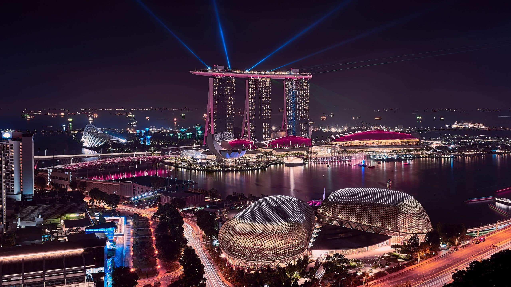

A maior cidade do Brasil, e centro ecônomico, financeiro e cultural do país.
População- 12,3 milhões
Grande polo industrial e abriga o principal aeroporto internacional do Brasil
População-1,4 milhão
Importante centro de tecnologia, ciência e educação
População- 1,2 milhão
Conhecida por sua forte presença na industria automobilística
População- 850 mil
Também parte do ABC paulista, com destaque para industria e comércio
População- 723 mil